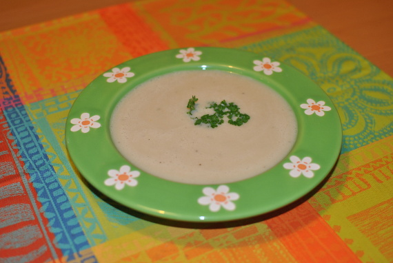

Cremige Petersiliensuppe

- Vorbereitung: ca. 20 Minuten
- Zubereitung: ca. 25 Minuten
- Für 4 Personen
Zutaten
- 300 g Petersilienwurzel
- 1 Kartoffel (mehligkochend, ca. 80 g)
- 2 Zwiebeln
- 1 EL Öl
- 800 ml Gemüsebrühe (instant)
- 200 g Schlagsahne
- 150 g Apfel-Aprikosen-Mus (Glas)
- Salz, Pfeffer
- nach Belieben 1-2 EL Sesam
- Petersilie zum Garnieren
Zubereitung
- Petersilienwurzeln und Kartoffel schälen, waschen und in Stücke schneiden. Die Zwiebeln
abziehen und fein würfeln.
- Öl in einem Topf erhitzen. Zwiebeln darin andünsten. Petersilienwurzeln und Kartoffel
dazugeben und kurz mit andünsten. Die Brühe dazugießen. Alles zugedeckt 20 Minuten köcheln
lassen.
- Die Suppe fein pürieren, Sahne und 125 g Apfel-Aprikosen-Mus unterrühren. Suppe erhitzen,
mit Salz und Pfeffer abschmecken.
- Nach Belieben Sesam in einer Pfanne ohne Fett erhitzen. Suppe in Schalen oder Suppentellern
verteilen, übriges Apfelmus (25 g) dekorativ einrühren. Suppe mit Sesam bestreuen, mit Petersilie
garniert servieren.